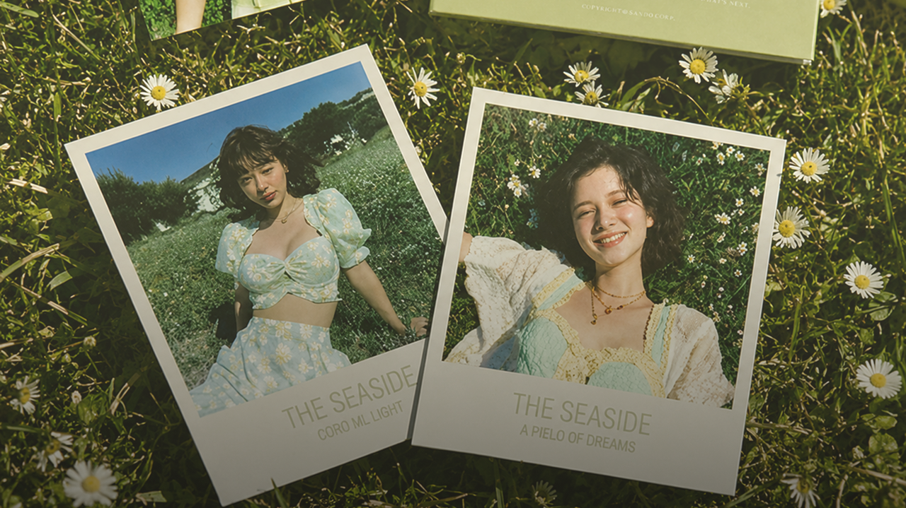
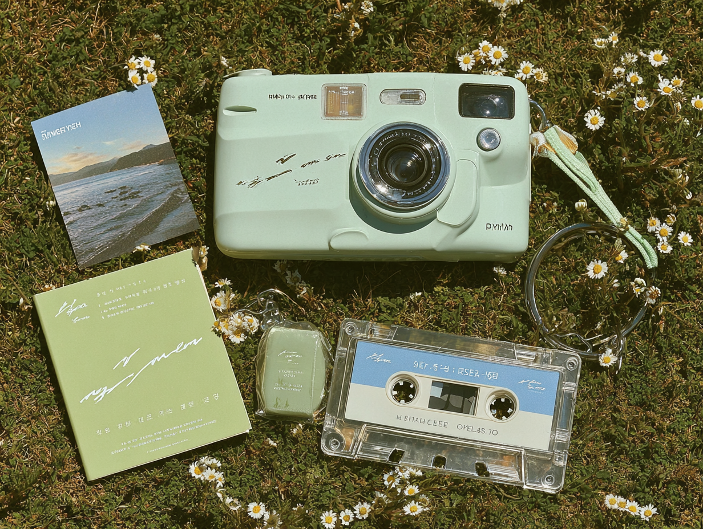
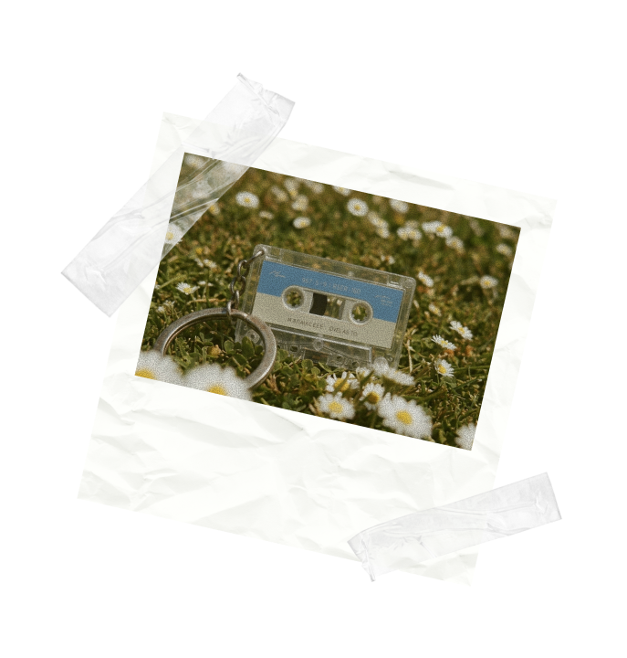
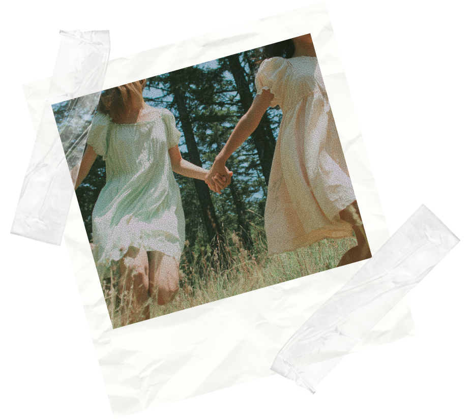

이 여름이 지나기 전에, 손에 쥘 수 있는 형태로.
EVERY SUMMER
FADES. SO DOES
THE MERCH.
좋아하는 아티스트의 굿즈인데 막상 받고 나면 어디 두어야 할지 모르겠습니다. 로고가 너무 크거나, 색이 생각보다 싸 보이거나, 결국 한 번 꺼내보고 다시 넣게 되는 물건.
SAN:DO는 그 문제에서 출발했습니다. 책상 위에 두고 싶은 것. 가방에 달고 싶은 것. 사진에 자연스럽게 담기는 것. 굿즈가 아니라 오브제.

SAN:DO 굿즈를 소장하는 3단계
발견
창가에서, 가방 속에서, 책상 위에서 SAN:DO의 여름이 먼저 눈에 들어옵니다. 크리미 아이보리+소프트 민트.
말하지 않아도 계절이 보입니다.
기록
필름 카메라로 오늘의 여름을 찍고 카세트 키링을 흔들며 걷고 엽서를 책상에 세워둡니다. SAN:DO의 물건은 쓸수록
이 여름을 기억하게 합니다.
소장
한정 수량, 재입고 없음. 이 여름이 끝나도 손 안에 남는 것. SAN:DO Summer
2026은 딱 한 번만 만들어집니다.

SANDO의 음악은
팬들이 원하던 것을 그대로 담았습니다
우리는 자극적인 훅보다 마음을 울리는 멜로디를, 화려한 조명보다 나뭇잎 사이로 부서지는 햇살 같은 조명을 노래합니다. SANDO는 영원히 마르지 않을 청춘의 한 페이지를 당신에게 선물합니다.
Discover
실물 색감 보장 컬러 카드 동봉
화면과 실물 색상 차이를 없애기 위해 패키지 안에 실제 소재 샘플 카드를 함께 넣었습니다. 받기 전부터 색감을 확인할 수 있습니다.
Explore
자연광 / 실내광 비교 상세 페이지
형광등 아래, 창가 햇빛 아래, 흐린 날 실내. 세가지 환경에서 찍은 실물 사진을 모두 공개합니다. 구매 전 이미 실물을 아는 것처럼.
Archive
로고 최소화 설계
SAN:DO 로고는 렌즈캡 안쪽에만, 작고 조용하게. 굿즈 티 없이 일상 사진에 자연스럽게 담깁니다.
Share
오브제형 디자인
창가에 두면 사진이 되는 카메라.
가방에 달면 포인트가 되는 키링.
책상에 세우면 인테리어가 되는 엽서. SNS에 올리고 싶어지는 물건을 만들었습니다.
A SUMMER
MORNING WITH
SAN:DO
여름은 특별히 뭔가를 하려던 건 아니다.
창가에 SAN:DO 카메라를 두고 빛이 들어오는 각도를 기다렸다.
나뭇잎 그림자가 아이보리 바디 위에 떨어졌을 때 그냥 사진을 찍었다.
카세트 키링은 편의점 갈 때 달고 갔다. 친구가 "그거 뭐야" 하고 물어온다. SANDO 얘기를 처음으로 꺼낸다. 엽서는 따로 보내지 않았다.
책상 위에 세워두는 것만으로 충분했다. 소장한다는 게 이런 건가 싶었다. 서랍에서 소장만 하지 않아도 되는 굿즈. 그게 바로 SAN:DO 다.


Fleeting Summer package
3종 개별 구매 가능 / 패키지 세트 구매 가능 (한정 수량 · 재입고 없음)
배송 - 2026년 여름방학 시작 시차 출고